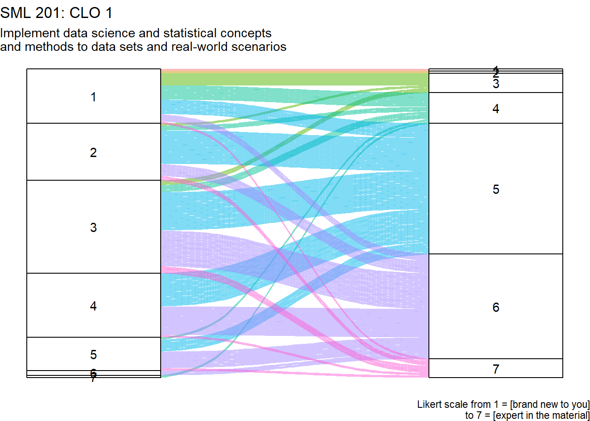
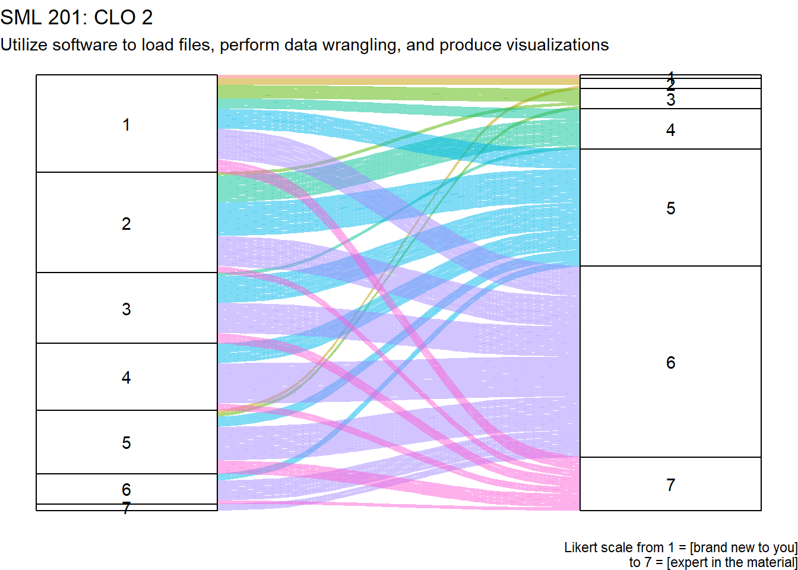
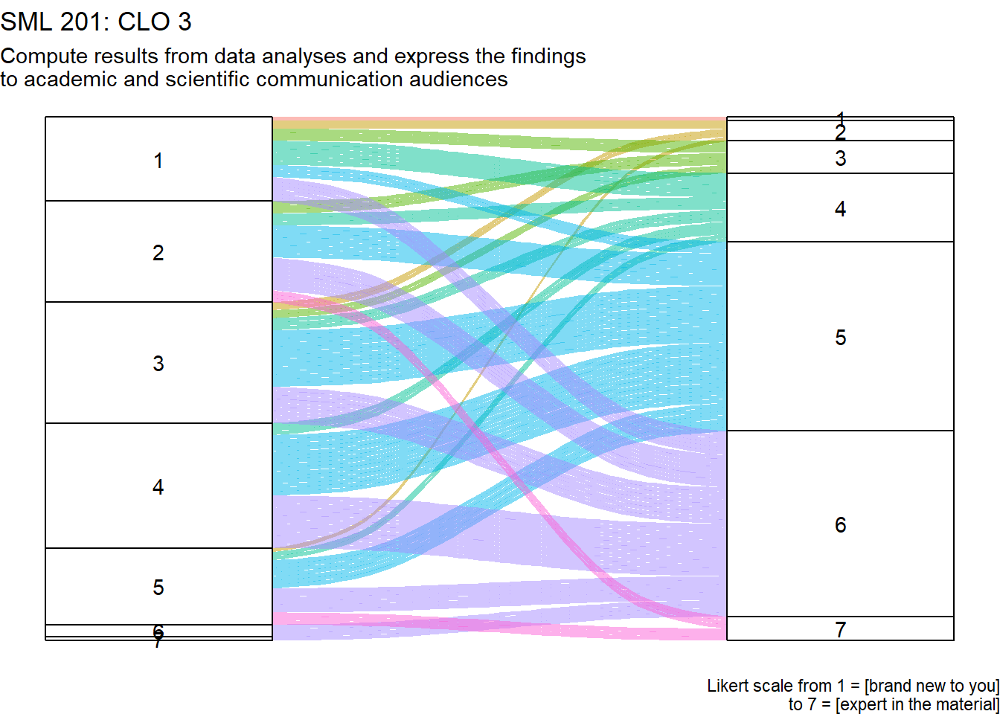
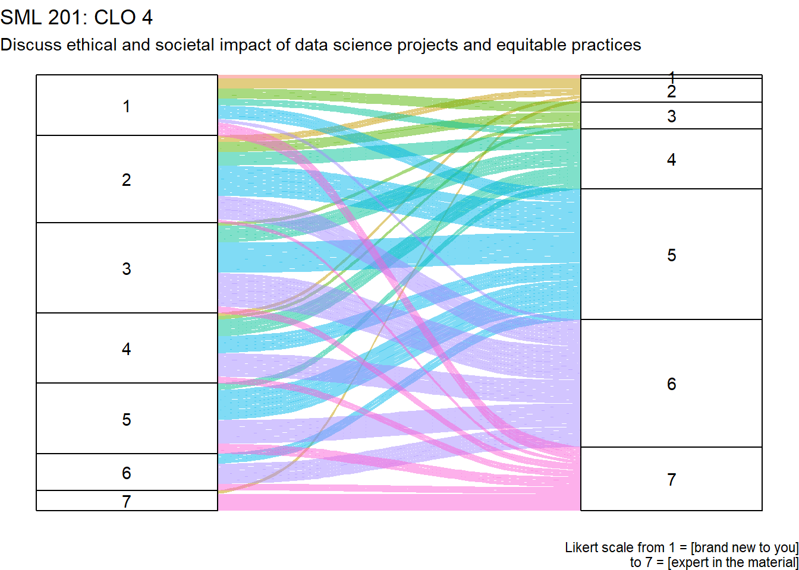

SML 201
This past semester, I had the honor of teaching SML 201, Introduction to Data Science, at Princeton University, and here I felt self-motivated to type up a lot of notes and thoughts I had over the semester to continue to build a great course. In particular, I am proud of
- deploying a variety of real-world data sets (most of them less than 10 years old)
- scaffolding tougher statistics concepts
- creating 4 intense take-home group projects
- pushing the students higher on Bloom’s Taxonomy
On Comparisons
In this blog post, whenever I use words like “more” or “higher”, I am simply comparing my recent performance to iterations of my classes that I delivered at a different university in years past. I mean no implications of my current colleagues at my current university as I haven’t combed through all of their materials.
Numerous post-semester thoughts will be organized into several sections, which will be listed alphabetically (as seen in the table of contents)
Attendance
- started with 120 students
- wanted to increase to 144 students (i.e. the seating capacity of the classroom times the two lecture sessions)
- ended up with 134 students
Toward the end of the semester, I observed that about 60 percent of the students attended classes regularly. Some people might think that recording the lecture sessions correlates with the lower attendance, but upon looking at the Panopto Video statistics, only about 10 students were using the recordings. More pertinent is probably these Quarto blog posts (I call them “lecture slides” at work) which include nearly all of the R code that we use.
Before-Lecture Tasks
I have been deploying my before-lecture tasks (whimsically nicknamed BLTs) for several semesters now. Thankfully, as more faculty deploy before-lecture assignments, students do not find this flipping unusual. I use these BLTs to reinforce definitions seen in lecture or preview math coming up in the semester. I deploy these BLTs as quizzes in Canvas, but I assure the students that they may repeat these quizzes as often as they want before the deadline (which is actually 5 PM of the lecture day). For some examples, concepts like skew, distribution tails, factorials, and describing correlation strength are better explored through many short multiple-choice questions instead of a lecture slide.
I was also able to use some BLTs to ask students to do some selections of reading from the textbooks. The BLT task to the student is to summarize their reading in 3 sentences. I deploy the BLTs this way for deeper concepts such as confidence intervals and the null hypothesis significance testing framework.
Course Learning Outcomes
I asked my students to fill out pre and post surveys that included self-responses on the 4 course learning outcomes. Here I try to present this information as alluvial plots.
Here I ask for your comfort level in completing tasks involving the course learning outcomes (as seen in the syllabus). Please rate your comfort on a scale from 1 = [brand new to you] to 7 = [expert in the material]
CLO 1
Implement data science and statistical concepts and methods to data sets and real-world scenarios
CLO 2
Utilize software to load files, perform data wrangling, and produce visualizations

CLO 3
Compute results from data analyses and express the findings to academic and scientific communication audiences

CLO 4
Discuss ethical and societal impact of data science projects and equitable practices

On Data Ethics
I had only one assignment that emphasized data ethics, and we talked about data ethics for a small amount of time during the semester. If students are reporting high familiarity with data ethics on these Likert scales, their knowledge probably came from other courses.
Ed Discussion
I estimate that about a third of the students used the Ed Discussion (online message board), with more visitors during the weeks where projects were due.
We did a decent job of establishing that most homework questions should be posted online in Ed Discussion (instead of e-mail).
Students liked the ability to post anonymously.
Exams
Each of the two exams had
20 multiple-choice questions that were similar to the before-lecture tasks
4 or 5 essay tasks where I asked students to describe what they would do as a data analyst for a given situation (in at least 5 sentences)
- emphasis on overall technique and concepts
- students were advised to not recite
Rcode (especially not entire code chunks)
These exams imitated job interviews for data analyst and data scientist jobs respectively. Most students did well in these exam settings, but there were some students who struggled with the change of emphasis. For example, instead of asking “What is linear regression?”, these tasks are emphasizing thoughts like, “When do we use linear regression?”
Lectures
Following the example of my current colleagues, I ran most of the lecture sessions as code-along.
Template Files
- In the second session, we built a Quarto script from scratch
- From the third session onward, I provided a template script file in Canvas to allow us to quickly load packages, data, and skip code that we had already encountered multiple times.
For each 80-minute lecture session, I aimed for the back-and-forth code-along to take up about 70 percent of the time. Most of the rest of the time was spent introducing the data set or mentioning deeper math/stats concepts.
The code-along style is somewhat justified by pedagogy and cognitive science studies (as mentioned in works like A Programmer’s Mind). Having audience members type code creates immersion and repetition that eases learning the coding.
However, in this semester, I did not employ active learning techniques. Some think-pair-share or Slido could invigorate the lecture setting.
What’s Wrong with this Graph?
One activity I want to deploy several times is “What’s Wrong with this Graph?” I present a half-done data visualization to the audience and ask for feedback (via think-pair-share). Students could point out common issues such as
- overrepresentation of missing data
- should the vertical axis start at zero
- overlapping labels
- is this the best tool for the job (e.g. bar graph versus line graph)?
I actually deployed this activity on the first day of class, but then didn’t bring it back.
Precepts
My initial vision of the precept assignments was to generate a different case study narrative for each session. For most of these assignments, I used a different data set. Early in the semester, I chose data sets from fields that were unusual for me (such as linguistics and the stock markets) so that I could save topics where I am more familiar (such as bioinformatics and sports) for usage with tougher topics in machine learning. The variety was meant to welcome students from various majors.
I frequently conflated “precept” (when needed in particular: “precept section” versus “precept assignment”). The reason why I did this was to avoid the “problem set” jargon that gives some anxiety to Princeton students. For these precept assignments, I aimed for about 10 tasks per assignment, where the first task was a common exploration to remind the students to literally look at the data and the column names.
In the weighted grades, the precepts totaled merely 10 percent of the semester grade (so each precept assignment was one percent). This may be lower than other classes, but we needed to reserve higher weights to the projects and exams to coerce the rigor of the course.
Following my colleagues’ example, I loved the Friday 5 PM due date. None of the instructors wanted to receive e-mails requesting assistance on a Friday evening.
Most students did the precept assignments during their assigned precept times
- students could finish an assignment on their own (and submit it before the due date)
- students could start an assignment early and finish it during their precept section
- a small number of students did the precept assignments completely on their own, but several students valued the trade-off that being there in person garnered feedback from the preceptor or tutor before turning-in the assignment
Projects
Over the semester, I deployed 4 take-home group projects.
Each project had about 10 more intense tasks, and there was a substantial writing component.
Student Groups
I asked the students to pick group members by the end of week 3. For remaining students, I tried to arrange them into groups. My hope was that the students organized by some intrinsic quality (e.g. same sports team, same residential college, same major), but it might also be useful to group students by their most flexible day (e.g. if they can meet their with their group on Sunday).
- groups of 2, 3, or 4 students
- about 5 students opted to work alone
Quality Request
For each project, I had the following requests to ensure a reasonable level of quality for a sophomore-level course
After each task, write a paragraph (about 5 sentences) to describe and elaborate on the results, especially in the context of the data set
Unless otherwise indicated, all data visualizations were to be done with
ggplot2(or something of equivalent technology) for publishable level quality- include a title, subtitle, and caption
- use colors beyond the default shades of gray
- include the source of the data
Unless otherwise indicated, all tables were to be done through
gtfor publishable level quality- include a title, subtitle, and caption
- use colors beyond the default shades of gray
- include the source of the data
Project 1
- theme: Electoral College
- concept: exploring data
- areas: politics, management
- main hurdle: merging data
Initially, my plan was for students to redo the 2020 USA Presidential election, but for the Green and Libertarian parties. Unfortunately, it was trivial because between those two parties, the Libertarian candidate had earned more votes in nearly every county. Furthermore, the Green party did not have a candidate in some counties, or sometimes multiple candidates.
Instead, I had students explore statistics concepts like error, logarithmic transformation, and z-score standardization. Some student groups did a great job in understanding why these data analyses could be useful to a political campaign.
Project 2
- theme: Covid-19 Wastewater
- concepts: correlation and linear regression
- areas: biology, epidemiology, public health
- main hurdle: pivoting data
Initially, my plan was for students to seek lagged correlation between spikes in wastewater findings of viral levels and hospitalization rates. Unfortunately, very few states (of the United States) kept records of hospitalizations or mortality that could be connected back to the coronaviruses.
Instead, I had the students replicate the data visualizations that were found on the National Wastewater Surveillance System.
Project 3
- theme: Cybersecurity
- concepts: confidence intervals and hypothesis testing
- areas: mechanical engineering, physics, computer science
- main hurdle: connecting the data with the associated research paper
I found a wonderful data set called MisbehaviorX that was created by a somewhat local group of scientists. That data set was created to allow future scientists to judge the quality of their machine learning algorithms for autonomous cars. The data simulated various possible cyber attacks. I had the students at least use our statistics techniques to measure the signals of the attacks.
Project 4
- theme: Ridesharing
- concepts: machine learning
- areas: business, economics, finance
- main hurdle: variable selection
At some data science conferences, I have seen economists talk about exploring Uber data sets (i.e. the ridesharing company). I was able to find a similarly extensive data set through Chicago Open Portal. I had the students explore the data in a way that reviewed all of the major concepts from the semester. Unfortunately, the anonymized data was rather homongenous (for example, there was little separation between morning and evening commutes), so we didn’t get impressive results at the time.